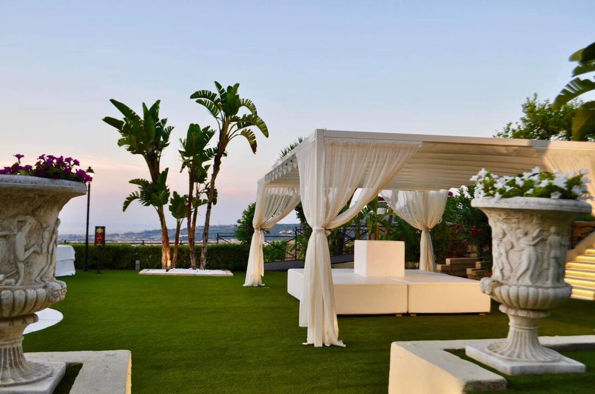

✕ Chiudi
Esplora
Casa Vacanza
Rito Civile
Galleria
Matrimoni & Eventi
Virtual Tour
Contattaci
Virtual Tour
Contattaci
Galleria
L'album
di Villa Martius
Richiedi un preventivo
✕ Chiudi

Richiedi un preventivo